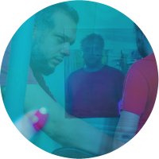

Categoría
EXPOSICIONES





Lugar:
Museo Ernesto de la Cárcova
Tipo de obra:
Instalación multimedia
Evento:
Noche de los Museos
Enero 2020
Pasado Presente
En el 2018 tuve mi primera experiencia como representante oficial de los trabajos que se crean en nuestra facultad de artes multimediales, dentro del marco de 'La Noche de los Museos'. Nunca hubiera imaginado que esa misma fatídica noche se largaría una tremenda tormenta que causó estragos en la concurrencia. Ninguna tormenta apagaría el espíritu de los estudiantes de la UNA, los cuales aprovechamos cada minuto para asegurarnos de que todas las obras estuvieran bien montadas, armando cada uno de los rituales escondidos que pudieran atrapar a los espectadores.
Fue mi primera vez en el Museo de Calcos y Escultura comparada 'Ernesto de la Cárcova', y luego de montar mi obra aproveché para conocer un poco más la colección del museo. Esa noche me sorpendí de encontrar obras clásicas al lado de modernas, danza moderna al lado de esculturas y hasta un lugar donde se compartían los secretos del arte tipográfico de antaño. Aún así con el chaparrón, mucha gente pasó esa noche por la sala de la UNA, lo cual me llenó de felicidad, no sólo por mi instalación, sino también por las variadas experiencias que iban desde mini escultura hasta teles con modificaciones para mostrar hologramas. ¡Toda esa preparación valió la pena!